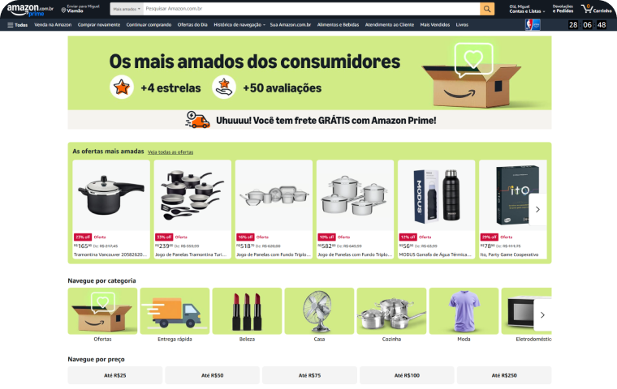
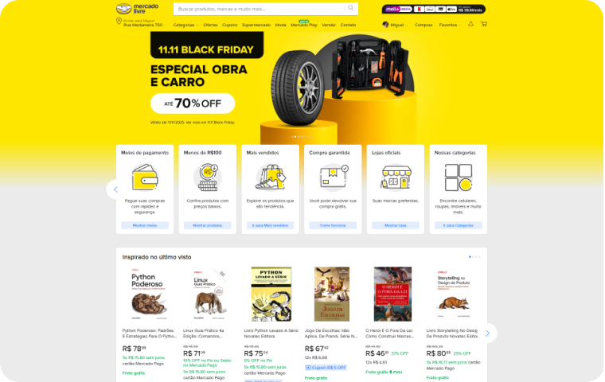
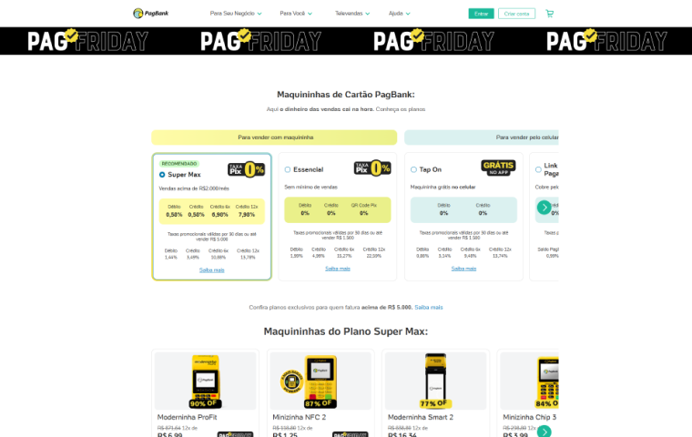
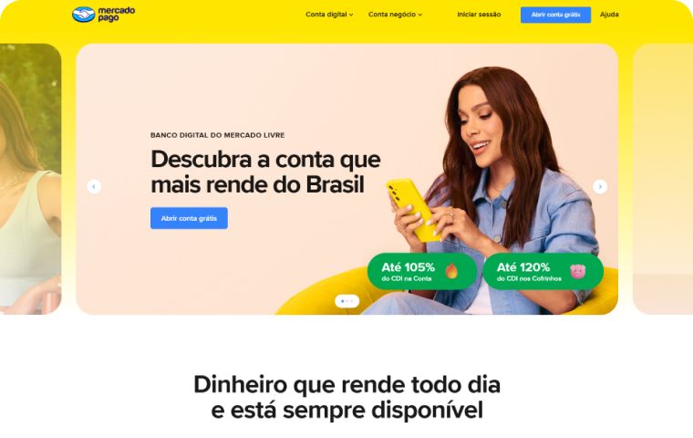
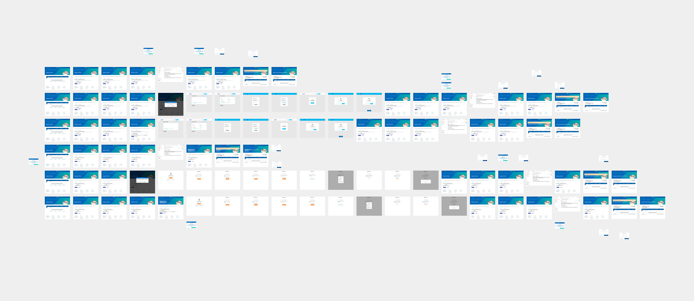
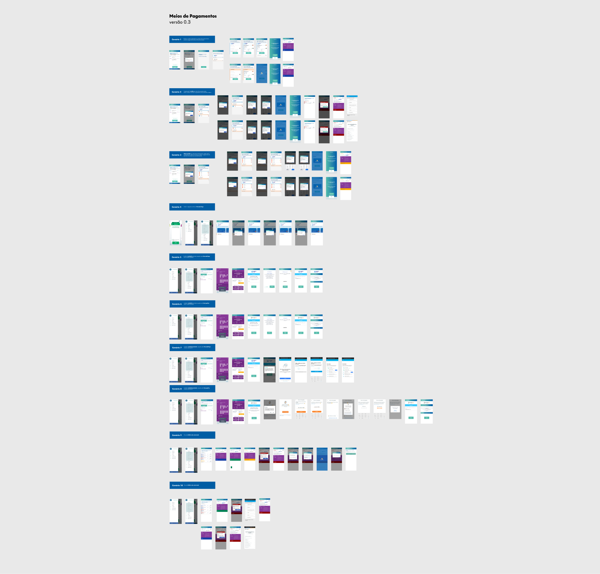

Contexto
O projeto iniciou com um kick-off de alinhamento com os Product Owners (POs) da Caixa, pois esta integração de gateways de pagamento era uma funcionalidade totalmente inédita na plataforma. O objetivo de negócio era expandir as opções do usuário, mas o desafio de UX era complexo.
Passado
A experiência de resgate era limitada e pouco flexível. O usuário tinha apenas três opções para reaver o valor: presencialmente em uma Agência Lotérica, em uma agência da Caixa, ou via transferência bancária. Além de confuso esse fluxo, possuía regras não tão claras.
Solução
Meu papel foi absorver essa visão, mapear os novos fluxos (incluindo todos os cenários de erro e validação) e desenhar uma jornada de pagamento unificada, garantindo que a transição entre os diferentes sistemas fosse fluida e contínua.
Resumo
Criar uma interface unificada que servisse como uma camada visual sobre os gateways. O objetivo era garantir que o usuário sentisse que ainda estava no ambiente seguro da loja, independentemente da escolha de pagamento.
Problema
A plataforma de pagamentos estava limitada aos métodos tradicionais da Caixa, gerando uma alta taxa de reclamação por parte dos usuários. A ausência de opções e possibilidades resultava em confusão na hora de receber o prêmio dos jogadores.
Principais Fricções Identificadas
-
Inconsistência Visual
Botões e inputs com estilos diferentes para cada método, quebrando a identidade da marca.
-
Feedback Confuso
O usuário ficava no escuro sem saber se o pagamento foi aprovado ou se ainda estava processando.
-
Excesso de Passos
Múltiplos redirecionamentos de tela aumentavam o tempo de checkout e a chance de desistência.
-
Erros Genéricos
Falta de clareza no motivo da recusa (ex: saldo vs. erro de sistema), impedindo a recuperação da venda.
-
Perda de Dados
O formulário apagava as informações se o usuário precisasse voltar uma etapa para corrigir algo.
-
Quebra de Confiança
Mudança brusca de layout ao ir para o gateway fazia o usuário sentir que saiu do ambiente seguro.
A Lógica Invisível (Back-end & UX)
Um checkout robusto não é feito apenas de telas felizes. Meu papel principal foi mapear e desenhar a resposta do sistema para as falhas de comunicação entre a Caixa e os Gateways (Mercado Pago/RecargaPay).
⏳ Gestão de Latência (Wait Time)
APIs bancárias oscilam. Desenhei estados intermediários de "Processando Pagamento" que educam o usuário sobre a espera, evitando o duplo clique (cobrança duplicada) e reduzindo a ansiedade durante o handshake de segurança.
⚠️ Tratamento de Erros Granulares
Substituímos o genérico "Erro no Pagamento" por feedbacks específicos baseados no código de retorno da API: saldo insuficiente, bloqueio de segurança ou falha no gateway. Isso permite que o usuário saiba exatamente como corrigir o problema sem abandonar o carrinho.
🔄 Conciliação de Status
O maior desafio de negócio: o que acontece quando o dinheiro sai da conta do usuário mas a lotérica não recebe a confirmação? Projetei fluxos de "re-tentativa" e comprovantes provisórios para garantir a segurança jurídica da transação.
📱 Tokenização & Segurança
Para o fluxo de cartões salvos, a interface foi desenhada considerando as regras de tokenização. O desafio foi mascarar dados sensíveis (PCI Compliance) sem dificultar o reconhecimento do cartão pelo usuário na hora da escolha.
Benchmark
Para desenhar a nova experiência de pagamentos da Caixa, realizamos uma análise de benchmark comparando o fluxo legado com os líderes em e-commerce e fintechs: Amazon, Mercado Livre, PagSeguro e Mercado Pago.
Como apresentam múltiplas opções (Pix, Saldo, Cartões) de forma clara e hierárquica.
Como constroem confiança e simplificam a jornada para maximizar a conversão e diminuir o abandono.
Amazon

Mercado Livre

PagSeguro

Mercado Pago

Mapeamento de Cenários
Para garantir uma integração robusta, mapeamos e prototipamos cada estado possível da interface, cobrindo os fluxos de compra e as particularidades dos fluxos de resgate para ambos os gateways.
🛍️ Jornada de Compra e Cartões
-
Sem cartão cadastrado
-
Sem cartão cadastrado
-
1 cartão (débito não autorizado)
-
2 cartões (Em processamento)
-
1 cartão cadastrado
-
Vários cartões (Scroll/Ações)

💰 Jornada de Resgate
-
Com conta existente
-
Sem conta
-
Aviso de conta inexistente
-
Com conta existente
-
Erro: Conta inexistente
Jornada de Compra e Cartões
Com a estrutura e os fluxos validados na etapa anterior, chegou o momento de aplicar a camada visual final. A missão aqui era transformar uma integração técnica complexa em algo simples e invisível para o usuário.
O grande desafio dos protótipos de alta fidelidade foi criar uma interface única que "vestisse" os dois gateways. O objetivo era garantir que, seja pagando com Mercado Pago ou Recarga Pay, a pessoa sentisse que estava sempre no mesmo ambiente seguro e familiar, sem sustos ou mudanças bruscas de design.
Importante: Para organizar a apresentação do portfólio, dividi o resultado final nas duas principais jornadas do usuário: a Jornada de Compra e a Jornada de Resgate. As telas abaixo são um recorte representativo de dezenas de variações detalhadas.

Jornada de Resgate
Para a retirada de prêmios e valores, a prioridade visual mudou para a transparência. Diferente da compra, onde a familiaridade com o gateway era vital, aqui o usuário precisa ter clareza absoluta sobre o status da sua solicitação.
Desenhei fluxos que mantêm o usuário informado em tempo real, utilizando a mesma linguagem visual unificada para evitar a sensação de ruptura.

Mobile
Adaptar a jornada de pagamento para o contexto mobile exigiu um foco absoluto na redução de fricção. Sabemos que digitar dados em telas pequenas é uma barreira de conversão, por isso, desenhei uma interface com campos otimizados, inputs numéricos automáticos e feedbacks visuais claros a cada etapa. O objetivo foi criar um fluxo linear onde o usuário nunca se sente perdido. Seja via cartão de crédito ou carteira digital, a interface guia o usuário com botões grandes e acessíveis (na zona de alcance do polegar), garantindo que a transação seja concluída com segurança e o mínimo de esforço cognitivo.

Vamos trabalhar juntos?
Se você tem uma ideia, uma vaga ou só quer trocar uma figurinha, me manda uma mensagem.